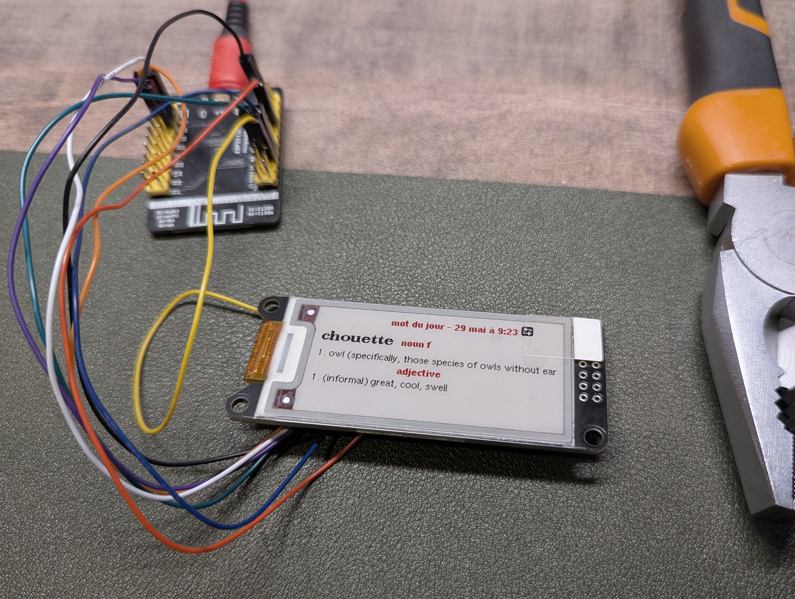
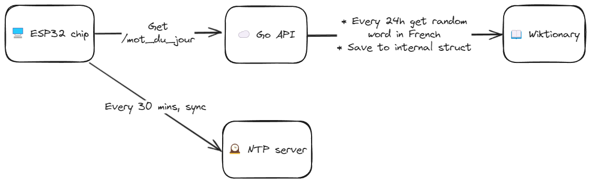

Creating "Mot du Jour"
Building a desk companion to learn French, one word at a time.
At the start of 2025, I resolved to do something I'd been meaning to do for years: pick up language learning again. I hadn't touched French since finishing GCSEs over a decade ago, but a trip to Italy sparked my interest again.
I find languages fascinating since they exist at such a unique juncture of culture, history, and how people think. Of course there's rules and grammar, but so much of "why we say things" (in any language) is so much more wishy-washy, and often steeped in clues about the pasts of the peoples that speak them today.
Around the same time, I rediscovered a box of electronics components I'd bought ages back with vague ambitions of building "something." (Of course life marched relentlessly on and I promptly forgot all about them.) Among them was a tiny 2.13" e-ink display, perfect for something minimal that I could sit on my desk.
That's when I decided to build something: a French "word of the day" (un mot du jour) display.

🤔 The gist
ESP32 chips are really nice since they have Wi-Fi onboard out-of-the-box. I could set this up to synchronise with some web service to get a new definition each day.
I looked for an API initially, but a foreign word of the day (particularly with definitions in a language other than the target!) is rather niche. There are however quite a few websites offering online dictionaries. I've used web scraping before in a couple of previous projects ex. 1 ex. 2 so figured something similar could come in handy.
After considering WordReference, I settled on Wiktionary as I prefer the style of definitions.
With the lack of on onboard clock, I'd also need to synchronise time with an NTP server to ensure the word was fetched on time.

⚙️ Hardware
I used the following components:
- WeActStudio 2.13" Epaper module white-black-red (250 x 122 pixel resolution)
- WeAct Studio ESP32-DOWD-V3
- A USB-C cable
The pins for the ESP32 were connected like so:
| Label | Colour | Purpose | Pin |
| BUSY | 🟪 | Allows chip to know that the display is currently busy doing something | 15 |
| RES | 🟧 | Reset | 2 |
| D/C | ⬜ | Data/Command - used by the chip to toggle between sending data or commands to the display | 0 |
| CS | 🟦 | Chip Select - identifies specific peripheral this display is | 5 |
| SCL | 🟩 | Serial Clock - used to synchronise data transmission | 18 |
| SDA | 🟨 | Serial Data - used to send data to the display | 23 |
| GND | ⬛ | Ground | Any GND |
| VCC | 🟥 | Power | Any 3V3 |
(These were somewhat fiddly and I had to crimp some of the Dupont cable heads with pliers.)
💽 ESP Software
Repository: https://github.com/jamesalexatkin/mot-du-jour-esp32
These were useful libraries that I installed with Arduino IDE's Library Manager:
- esp32 by Espressif Systems - necessary to flash my particular board. I used the option
ESP32 Dev Module. - GxEPD2 - for drawing to the display.
- U8g2_for_Adafruit_GFX - since accented characters are integral to French (and indeed many non-English languages), this library was super handy for adding other fonts to the display.
- ArduinoJSON
- StreamUtils
This article was particularly useful in shaping the structuring of a daily operation on the chip.
For the first C++ code I'd written since uni, I don't think this turned out too badly.
☁️ Proxy API
Repository: https://github.com/jamesalexatkin/mot-du-jour-api
This was a simple Go API I deployed up with a couple of endpoints. After searching for some free hosting, I came across Render which offers a free tier for hobby projects. (The service is simple enough that I'd consider self-hosting in future though.)
As well as the main GET /mot_du_jour route for returning a daily word, I also included GET /mot_spontane (mot spontané) for returning a different, spontaneous word on each call.
The main challenge here was scraping the information from Wiktionary. Thankfully, there is a random page link. I was hoping it would be more structured, however it seems the HTML is in a flat structure rather than hierarchical.
HTML scraping can be fiddly at the best of times, let alone when most of the titles and definitions are rendered as sibling page elements, rather than neatly organised into their own divs.
The goquery library came in useful here.
🏫 What did I learn?
- Hardware is tricky and very fiddly, but very satisfying having something in front of you when it works.
- How to contact NTP and set time on Arduino board.
- How to do HTML parsing of Wiktionary.
➡️ Future steps
I'd love to develop some case/shell to house the electronics of this. I've seen a couple of interesting ideas (ex. 1) (ex. 2) for small 3D printed e-ink display cases so may do something like this.